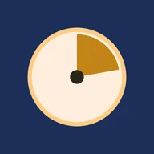

Kairos
The right time for every task.
Creator and developer
App that ranks the day's tasks by priority score (WSJF method) and fits them into the gaps of the calendar, around meetings. No account, no ads, no network: data stays on the device.
- Android, Windows, Linux, macOS and browser
- Published on F-Droid
- 6 languages: FR, EN, DE, ES, IT, RU
- Kotlin Multiplatform · Compose Multiplatform · SQLDelight
- Open source (MIT licence)
v4.0.0 latest release983 downloads (GitHub)15 stars